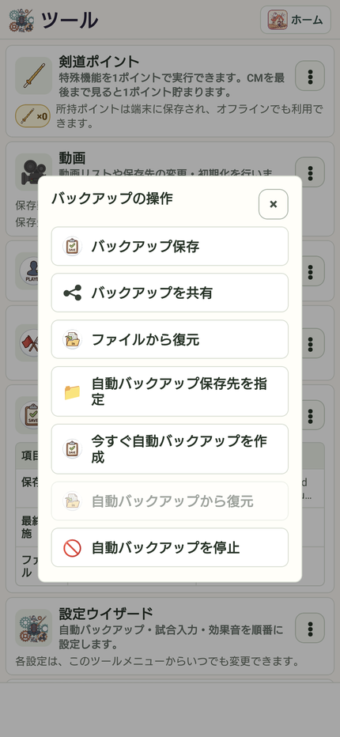

24 / 大切な記録を守る
バックアップを保存・復元する
取りためた記録を、端末内だけに置かないようにしましょう。
操作の入口ツール → バックアップ
手動で保存する
「バックアップ保存」を選び、案内に従ってファイルを保存します。保存先とファイル名を確認します。
自動保存を設定する
「自動バックアップ保存先を指定」から保存先を選びます。「今すぐ自動バックアップを作成」で保存も確認できます。
保存状況を見る
手動・自動の保存先、最終実施日時、ファイルを確認します。端末の外にも控えを保管します。
必要なときに復元する
「ファイルから復元」または「自動バックアップから復元」を使います。現在の記録と置き換える内容を、確認画面でよく確認します。

